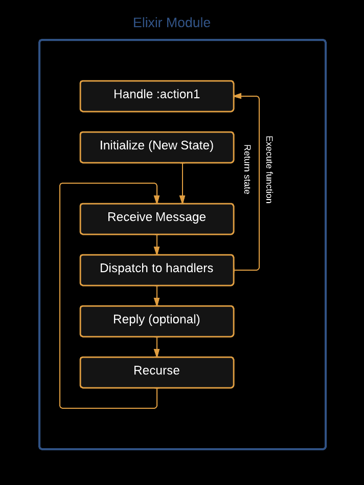
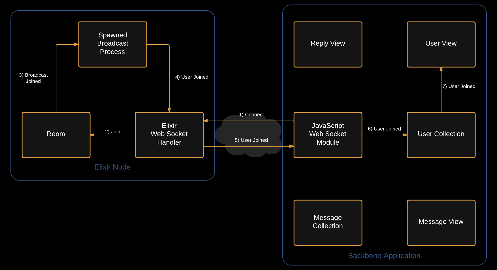
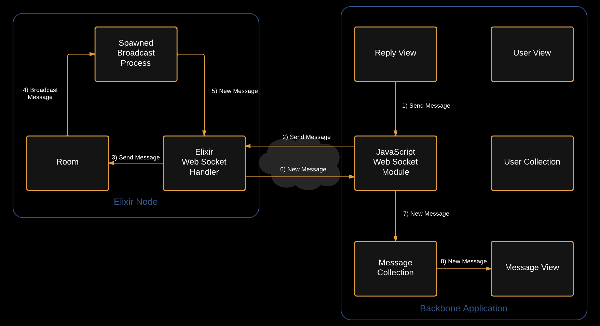
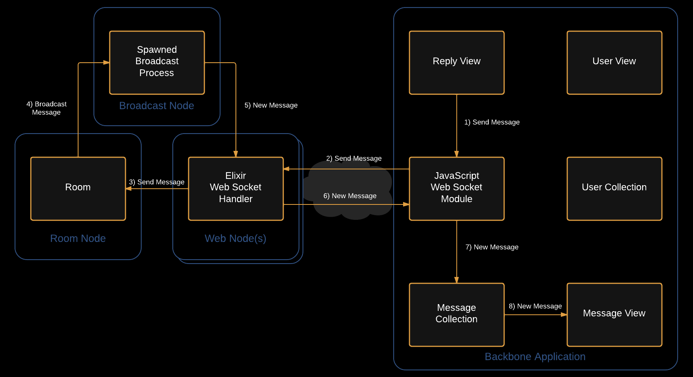

An
Elixir
for the
Web's Future
Who am I?
Alan Peabody - Developer @ Agilion
Ruby - JavaScript - Clojure - Elixir
Slides: http://alanpeabody.com/presentations/elixir-for-webs-future/
Example Code: https://github.com/alanpeabody/el_chat
The Evolution of the Web.
A limited history of how core web technologies have been influenced by misuse and abuse.
Early Web (The 90s)

- Need Serve (complete) web pages for cross referencing documents.
- Hack HTML extracted, adopted, extended by Mosaic/Netscape/IE.
- REACT HTML 2,3,4 & HTTP 0.9, 1.0, 1.1 standards
Birth of Ajax (Early 2000s)
- Need More dynamic sites with only small partial content updates.
- Hack Load partial content using frames/iframes and JavaScript.
- React Browsers implement XMLHTTP(IE) and XMLHttpRequest to solve issue.
Web 2.0 (Mid to Late 2000s)
- Need Ajax without all the cross browser code. Sharable web.
- Hack jQuery, Prototype, etc - More abstraction on HTTP, cross browser Ajax
- React W3C XHMLHttpRequest Spec
Real time web (2010+)

- Need More collaboration & apps need to push data to client.
- Hack Long Polling, flash based solutions, HTTP keep alive, Pipelining.
- React WebSockets Protocol & API drafted.
The Web of the Future
Users demand more
- More dynamic interfaces
- More real time collaboration
- More social sharing
- More interaction
Protocols are Old
- HTTP 1.1 is 18 years old.
- HTTP 2.0, based on SPDY, still being worked on by IETF.
- HTTP 2.0 proposal expected End of 2014.
Request/Response Fails at Real Time
- Todays most popular back end technologies have all been designed around the request/response cycle.
- Tools that do support persistent connections:
- Node.js, Ruby EventMachine, Python Twisted, etc
- Need auxiliary infrastructure (Redis Pub/Sub) to scale beyond one server.
- Can be hard to reason about - callback soup.
More connectivity is coming
- Today: Your computer and phone are online
- Tomorrow: Your car, glasses, watch, fridge and bike will be.
Elixir
So What is Elixir?
Elixir is a functional meta-programming aware language built on top of the Erlang VM. It is a dynamic language with flexible syntax with macros support that leverages Erlang's abilities to build concurrent, distributed, fault-tolerant applications with hot code upgrades.
Jose Valim, Elixir author, Rails core
Functional
- A programming paradigm
- Based on The Lambda Calculus
- Values Immutability over mutable state*
- No objects*
- Learn more about functional programming @VTFun
Dynamically Typed
- Essentially this just means types are checked at run time instead of compile time.
- Ruby, PHP, Clojure, Python are other examples of dynamically typed language.
Meta-Programming Aware
- Macro based meta-programming.
- Great for building DSLs.
- Most of Elixir is written in Elixir macros.
- Syntax is Ruby-ish, but is a result of the macro based implementation.
Erlang VM
- Elixir compiles to Erlang bytecode.
- The Erlang VM has been worked on/used for years.
- Originally built for Telcom uses by Erikson.
The Erlang Virtual Machine is our greatest strength.
— Jose Valim
Concurrent

- Erlang VM is process based:
- Process are very lightweight
- Processes share no state
- Processes can store their own state
- Processes send/receive messages via mailboxes with each other.
- 2 Million concurrent connections per server is possible.
Distributed
- Multiple Servers (Nodes) can be connected in one cluster.
- Processes can send/receive messages across node boundaries.
Fault Tolerant
- Let it crash!
- No single piece of they system dying should ever bring down the whole.
Hot Code Upgrades
- Deploy a new version with no downtime.
- 2 versions of code in memory, process loop “recurses” to new version.
Elixir and the Web
Cowboy
- Each connection has its own process
- Uses HTTP1.1 w/ Keepalive by default
- Can “upgrade” connection to WebSockets or REST
Websockets
- Websockets pass messages
- Elixir processes pass messages
- Passing messages from Elixir to JS to Elixir is easy and clean
Demo
- TODO: Figure out demo link for wifi free zone
How it works - Connecting
How it works - Sending a Message
But what about Web Scale?
ROFL Scale - Sending a Message
Recap
- Real Time communication is here to stay.
- Web Sockets are coming.
- Elixir makes Web Sockets easy.
Resources
- Elixir Getting Started Guide: http://elixir-lang.org/getting_started/1.html
- Programming Elixir by Dave Thomas: http://pragprog.com/book/elixir/programming-elixir
- Elixir Documentation: http://elixir-lang.org/docs/master/
- Elixir on IRC - #elixir-lang on Freenode
- Learn you some Erlang for Great Good: http://learnyousomeerlang.com/
Thank you!
Alan Peabody
- Twitter: @alanpeabody
- Github: alanpeabody
- Slides: http://alanpeabody.com/presentations/introduction-to-elixir
- ElChat Example Code: http://github.com/alanpeabody/el_chat